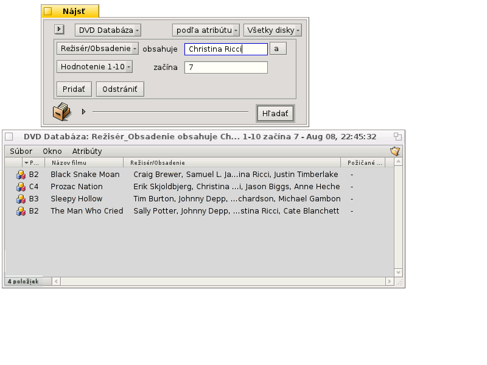

Slovenčina
Slovenčina Català
Català Deutsch
Deutsch English
English Español
Español Français
Français Italiano
Italiano Magyar
Magyar Polski
Polski Português
Português Português (Brazil)
Português (Brazil) Română
Română Suomi
Suomi Svenska
Svenska 中文 ［中文］
中文 ［中文］ Русский
Русский Українська
Українська 日本語
日本語| Obsah |
|
Prípravy Vytváranie vlastného typu súboru Ikona Rozpoznávanie súborov Popis Preferované aplikácie Ďalšie atribúty Indexovanie Vypĺňanie údajov Prehľadávanie databázi |
Workshop: Typy súborov, atribúty, index a požiadavky
Toto je workshop na ukázanie využitia Atribútov, Požiadaviek, Indexu a vlastných Typov súborov. Ako príklad si vytvoríme databázu na udržanie prehľadu vo vaších DVD.
 Prípravy
Prípravy
Najprv sa rozhodnime aký typ súboru a aké atribúty poslúžia našim potrebám. Pôvodne som chcel použiť Záložkový súbor s odkazom na stránku IMdB, ale Haiku nemá momentálne prehliadač so „záložkami“ ako NetPositive v BeOS, tak som vymyslel toto: Samotný súbor bude obrázok JPEG na obal DVD.
Vďaka WebPositive má teraz Haiku znova prehliadač používajúci súbory záložiek, takže môžeme ako základný typ súboru pre naše databázové súbory použiť aj súbor záložiek namiesto súboru obrázka.
V každom prípade pridáme k týmto súborom niekoľko atribútov. Tu sa musíme rozhodnúť, či budeme neskôr vyhľadávať súbory požiadavkami (potom musíme pridať index) a ak, tak aký typ atribútu by to mal byť. Čísla (int, float) možno vyhodnocovať inak ako text (</=/> vs. je/obsahuje/začína).
Tu sú atribúty, ktoré by som chcel vidieť pri mojich DVD:
- Názov filmu
- Žáner
- URL napr. na IMdB
- Režisér/obsadenie
- Zápletka
- Moje hodnotenie od 1 do 10
- Súradnice na mojej poličke napr. A2, B3, takže nájdem DVD aj v skutočnosti :)
- Ak si disk niekto požičal, tak kto...
Vytváranie vlastného typu súboru
Zapnite nastavenia Typov súborov, a kliknite na tlačidlo pod hierarchickým zoznamom naľavo. Otvorí sa malé okno a vyberiete si v akej skupine MIME bude váš nový typ súboru. Taktiež môžte vytvoriť úplne novú skupinu. Dajme ho do „application“ a nastavme "Interný názov" na DVDdb.

Teraz sa otvorí panel pre nový typ súboru DVDdb:

Ikona
Dvojitým kliknutím na ikonu otvoríte Icon-O-Matic na navrhnutie ikony pre váš typ súboru. Taktiež môžte pretiahnuť ikonu z iného typu, môžno ako začiatok pre upravenú verziu.
Rozpoznávanie súborov
Môžte pridať prípony ako .txt .jpg .mp3 na rozpoznanie súborov podľa ich prípony. Je to užitočné, keď pracujete so súbormi zo systému, ktorý nepoužíva typy MIME. To pre náš príklad nepotrebujeme.
Popis
- Názov typu - Zobrazuje sa napr. v okne Trackera v menu Atribúty a „Druh“ atribút súboru.
- Popis - Trochu podrobnejší popis.
Preferované aplikácie
Toto pop-up menu zobrazuje list všetkých aplikácií, ktoré môžu otvoriť tento konkrétny typ súboru. Odtiaľ môžete vybrať, ktorý program by sa mal spustiť, pri otvorení takéhoto súboru dvojitým kliknutím.
| otvára okno, kde si môžete vybrať aplikáciu ktorá otvorí súbory tohoto typu. Tu nastavíme Prehliadač Obrázkov pre zobrazenie obalu DVD. | ||
| otvára okno, kde môžete vybrať akýkoľvek súbor ktorý už má vybranú tú preferovanú aplikáciu, ktorú potrebujete. |
Ďalšie atribúty
Here we enter all the custom attributes we decided on in our preparations. Clicking the button opens a panel to enter all the data for the new attribute. You can edit an existing attribute with a double-click.

Názov atribútu - Objavuje sa napr. ako nadpis stĺpca v okne Trackera.
Vnútorný názov - používa sa na indexovanie a vyhľadávanie atribútu.
- Typ - Definuje hodnotu, ktorú môže dostať atribút a tiež ako môže na ňu klásť požiadavky.
- pre obyčajný text
- pre binárny údaj: 0 alebo 1
- pre celé čísla s rôznym rozsahom:
- : ± 255
- : ± 65 535
- : ± 4 294 967 295
- : ± 18 446 744 073 709 551 615
- pre desatinné čísla, s malou presnosťou
- pre desatinné čísla, dvojitá presnosť
- pre čas a dátum
- Viditeľné - toto zaškrtávacie políčko hovorí či je vôbec atribút viditeľný v okne Trackera. Keďže Tracker bude prostredie pre našu DVD databázu, zaškrtneme to a definujeme jeho zobrazenie s:
- - Ponecháme „Default“. V budúcnosti bude dostupných viac možností, napr. panel alebo hviezdičky na hodnotenie atď.
- - Hovorí či atribút bude upraviteľný v Trackery.
- - Predvolená šírka stĺpca atribútu v okne Trackeru.
- - Atribút môže byť zarovnaný vľavo, v strede alebo vpravo.
Teraz vložme všetky informácie pre naše atribúty:
| Vnútorný názov | Typ atribútu | indexované? | Popis |
|---|---|---|---|
| DVDdb:title | text | áno | Názov filmu |
| DVDdb:genre | text | áno | Žáner |
| DVDdb:url | text | nie | URL |
| DVDdb:cast | text | áno | Režisér/obsadenie |
| DVDdb:plot | text | nie | Zápletka |
| DVDdb:rating | int-32 | áno | Hodnotenie 1 až 10 |
| DVDdb:coord | text | nie | Polička |
| DVDdb:lent | text | áno | Požičané komu |
Indexovanie
Predtým ako začneme zadávať data do našej databáze DVD, mali by sme pridať určité atribúty do Indexu. Iba indexované atribúty možno použiť rýchle Požiadavky Haiku.
Tak, čo budeme v budúcnosti hľadať? Pravdepodobne sa nebudeme pýtať „čo je na súradnici B4 v mojej poličke?“ alebo „obsahuje IMdB URL alebo zápletka filmu slovo 'pope-shenooda'?“.
To necháva tieto atribúty:
| Vnútorný názov | Typ atribútu |
|---|---|
| DVDdb:title | text |
| DVDdb:genre | text |
| DVDdb:cast | text |
| DVDdb:rating | int-32 |
Aby sme ich zindexovali, otvoríme Terminál a jednoducho pridáme jeden atribút po druhom:
mkindex -t string DVDdb:title mkindex -t string DVDdb:genre mkindex -t string DVDdb:cast mkindex -t int DVDdb:rating
Možnosť -t definuje typ atribútu, ktorý je reťazec (string) pre všetky okrem hodnotenia, ktoré je celé číslo (integer).
Vypĺňanie údajov
Teraz, keď je je všetko nastavené, môžme začať vypĺňať nejaké údaje. Keďže náš základný súbor je obrázok obalu, pôjdeme na online zdroje ako IMdB, vyhľadáme náš prvý film a uložíme obal alebo plagát do nového priečinka, kde chceme mať naše súbory DVDdb.
Po otvorení priečinku vidíme typické okno s jedným JPEG obrázkom.Pravým kliknutím zmeníme typ súboru na application/DVDdb s Doplnkom Typy súborov. Viac informácii k tomu nájdete v dokumente Typy súborov.
Teraz aktivujeme všetky atribúty našej DVDfb z menu okna Trackera a popresúvame stĺpce ako chceme.

Kliknutím na zatiaľ prázdny atribút (alebo stlačením ALT E) vstúpime do režimu úprav a vyplníme všetky údaje. Klávesmi TAB a SHIFT TAB sa môžete pohybovať medzi atribútmi.
V našom príklade zvyčajne začneme so stiahnutím JPG obalu a zmenením jeho typu na applications/DVDdb. Je tu aj iný elegantný spôsob ako vytvoriť súbor, s ktorým budeme pracovať. Jednoducho skopírujte prázdny súbor nášho typu do /boot/home/config/settings/Tracker/Tracker New Templates a premenujete ho na DVDdb.
Kliknutím pravým tlačidlom v okne nájdete novú možnosť v okrem základného „Nový priečinok“.
Prehľadávanie databáze
Po niekoľkých hodinách ťažkej práce máme peknú malú databázu, ktorú môžte prehľadávať aby ste našli všetky vaše filmy Christiny Ricciovej, ktorých hodnotenie je 7 a viac :)
Môžete priradiť rozumné rozloženie atribútu pre výsledky požiadavky na konkrétny typ súboru.
Otvorte priečinok obsahujúci vaše DVDdb súbory a upravte atribúty tak, ako chcete mať zobrazované výsledky vyhľadávania. Skopírujte toto rozloženie s .
Otvorte /boot/home/config/settings/Tracker/DefaultQueryTemplates, vytvorte nový priečinok a premenujte ho na group/filetype, nahraďte medzery podtržítkami; v našom prípade "applications_DVDdb".
Otvorte nový priečinok a vložte rozloženie s . Voilà:
